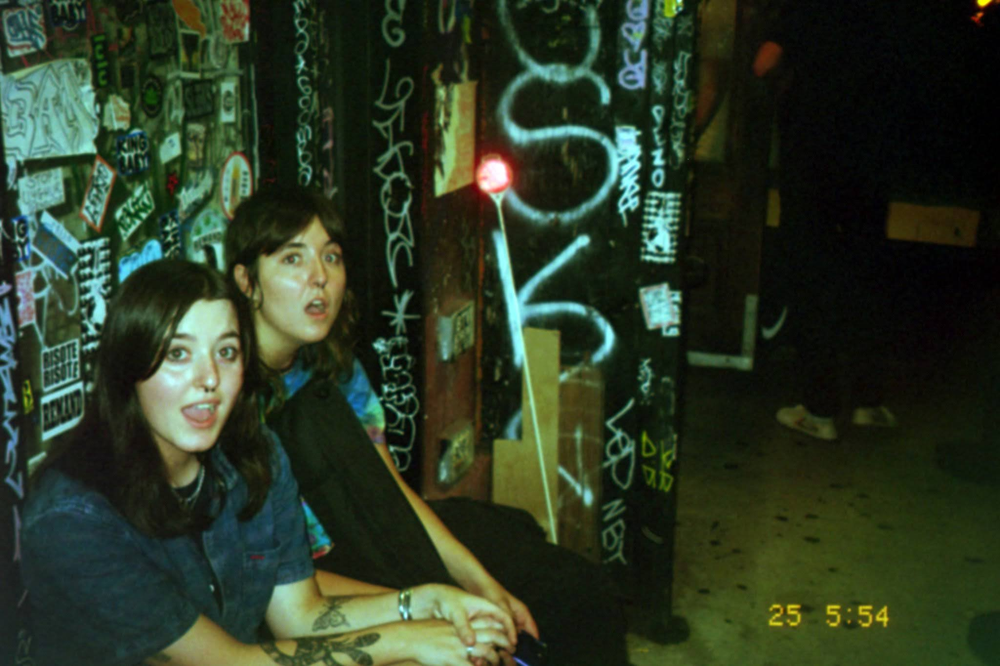
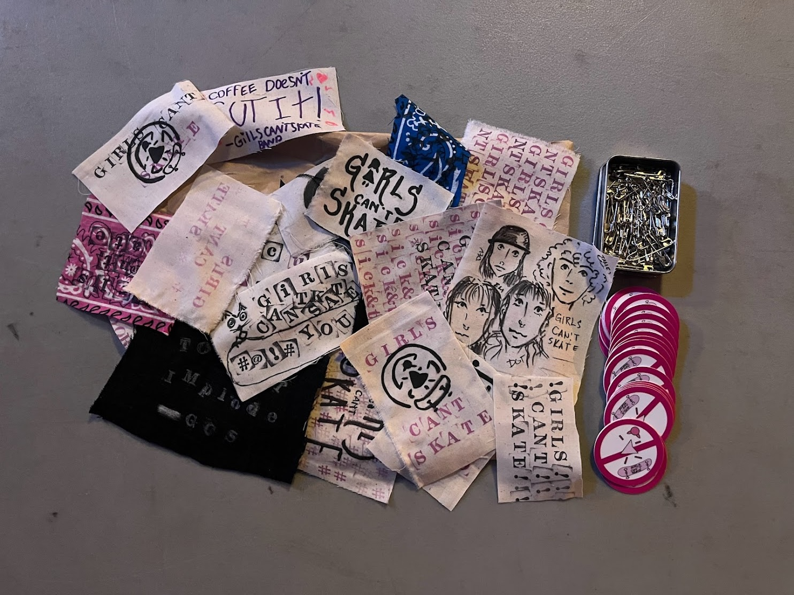
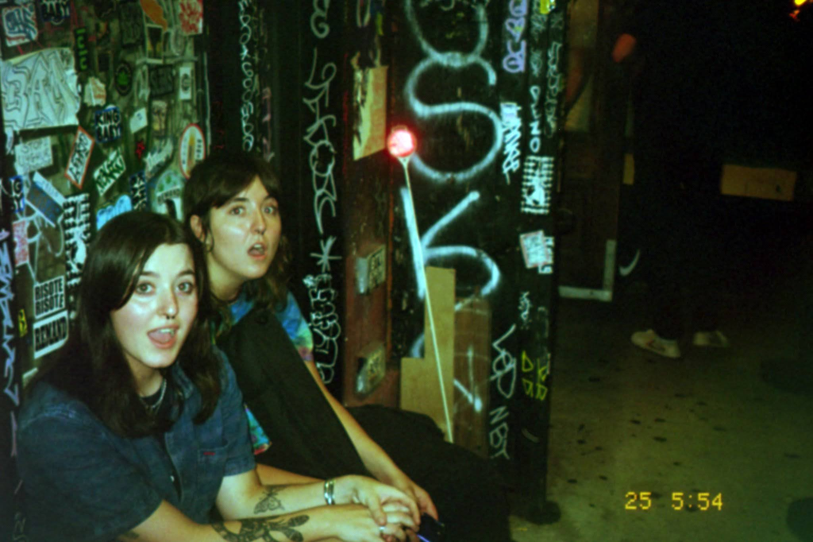
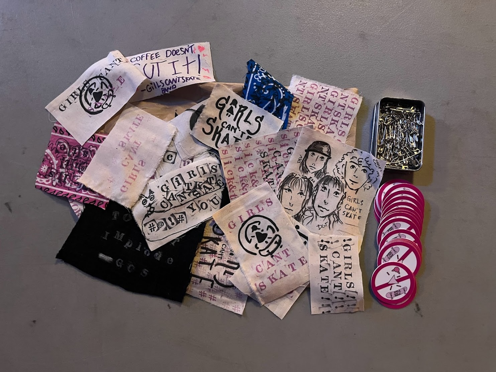

Dot and Devon, Brooklyn.

Dot at the Kingsland.

Merch!

NYC, walking to practice.
When I got to college I saw a flyer for a NYC band called Girls Can't Skate looking for a drummer.
I ran to the studio every day and learned how to play drums so I could join the band.
I sent a vid of me playing "Bet my Blood" by Pretty Sick as an audition. Eventually I
had to leave the band to become a yoga teacher, but the short time I spent with Dev, Dot, and Em will remain with me forever
as a joyous, heart-felt experience.
Dot and Devon, Brooklyn.

Dot at the Kingsland.
Merch!

NYC, walking to practice.